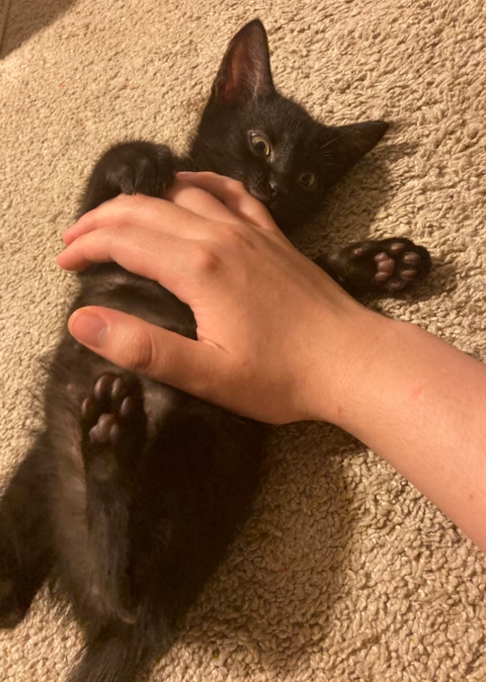
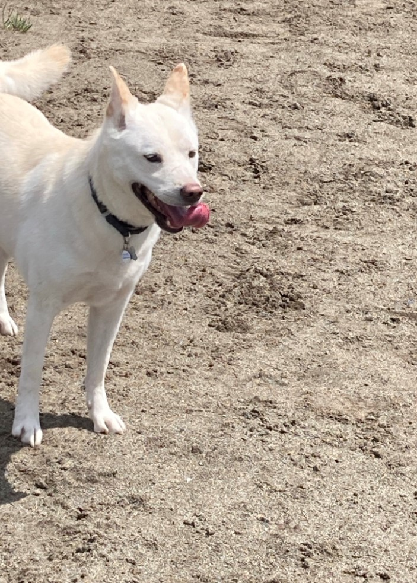

I am a student in EDCC working towards a degree in computer science.
While I was born right here in Lynnwood I am Korean and have visted the country many times.
I have two pets. A rare Korean Jindo dog named Ronin and a kitten named Dusty.
They make me very happy.
hello dusty and ronin...


a little more about me...
When I'm not busy with school or work I try my best to stay active. Honestly with the pandemic going on it's been
pretty rough trying to maintain any routine. I'm very grateful I have a group of friends who are willing to throw
a brick through my window in order to get me up (true story actually). I enjoy going to the gym with friends and
having a nice bowl of pho. It's not the best routine ever but I make do.
I love music. Most people do of course, but I really enjoy the technical aspect of it. While I chose to go for a career in CS,
one of my dream jobs would still definitely be one in audio engineering. I stick with digital audio workstations for now, but
I'd love to get my hands on a MOOG synth or a Yamaha DX11. I'm particularly fond of the latter. It's a gorgeous piece of audio
equipment.
Honestly my love for old tech doesn't even end at oldschool audio stuff. I really miss the old Palm PDAs. I had a Palm Tungsten E2
and it was awesome. Still have it. It was the iPhone before the iPhone. I like even older stuff too. My dream computer as a child
was a Tandy TRS-80. Despite me being in Gen Z I had an odd obsession with DOS computers as a kid. Honestly I still do.
2021 was an odd year. I remember people saying it could never get worse than 2020. I don't think it was much worse but I certainly
don't think it was any better either. It just felt like more of the same to me. Maybe 2022 will be that rainbow after the storm.
I have high hopes, and wish everyone a great new year! This might be the one!